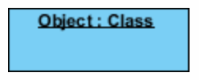
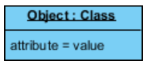
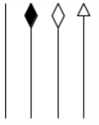
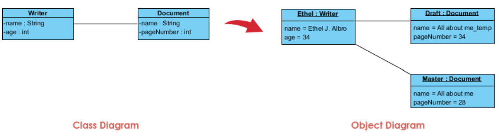

Visibility
لا نحتاج إلى وضع Visibility في Object Diagram؛ لأنها موضّحة في Class Diagram.
مخطط الكائنات
يُستخدم مخطط الكائنات لتوضيح البنية الفعلية للكائنات (Objects) في لحظة زمنية محددة، من خلال عرض الكائنات الموجودة وخصائصها (Attribute Values) والعلاقات التي تربط بينها. يُعد المخطط لقطة (Snapshot) لحالة النظام في وقت معين، ويساعد على فهم كيفية تمثيل الفئات (Classes) في صورة كائنات فعلية وكيفية ارتباط هذه الكائنات ببعضها.
| العنصر | الرمز | الشرح |
|---|---|---|
| Object |
 |
كائن يمثّل نسخة فعلية من فئة، ويُكتب اسمه عادةً
بالصيغة التالية مع وضع خط أسفل الاسم:
objectName:ClassName
|
| Attribute Values |
 |
القيم الفعلية لخصائص الكائن في لحظة محددة،
وتُكتب داخل مستطيل الكائن أسفل اسمه، مثل
age = 20.
|
| Link |
 |
خط يوضّح وجود علاقة بين كائنين، ويعبّر عن علاقة فعلية بين نسخ الفئات المرتبطة. |
| وجه المقارنة | Class Diagram | Object Diagram |
|---|---|---|
| الهدف | يوضّح البنية العامة للفئات والعلاقات بينها. | يوضّح الكائنات الفعلية والعلاقات بينها في لحظة محددة. |
| البيانات | يوضّح أسماء الخصائص وأنواع بياناتها. | يوضّح القيم الفعلية للخصائص. |
| المنظور الزمني | لا يرتبط بلحظة زمنية محددة. | يمثّل Snapshot لحالة الكائنات في وقت معين. |
| الاستخدام | يساعد على تصميم بنية النظام. | يساعد على فهم مثال فعلي لبنية الكائنات والعلاقات بينها. |
ملاحظة: يرتبط Object Diagram عادةً بـ Class Diagram؛ إذ تُنشأ الكائنات وفقًا للفئات المعرّفة فيه، وتُعرض القيم والروابط الفعلية التي توضّح حالة معينة من النظام.
لا نحتاج إلى وضع Visibility في Object Diagram؛ لأنها موضّحة في Class Diagram.
عند تمثيل الوراثة، نمثّل كلاسات الأبناء فقط ولا نمثّل كلاس الأب، ونضع Attributes الخاصة بكلاس الأب ضمن كلاس الابن.
نرسم الـ Objects للكلاسات المشاركة في التفاعل فقط.
